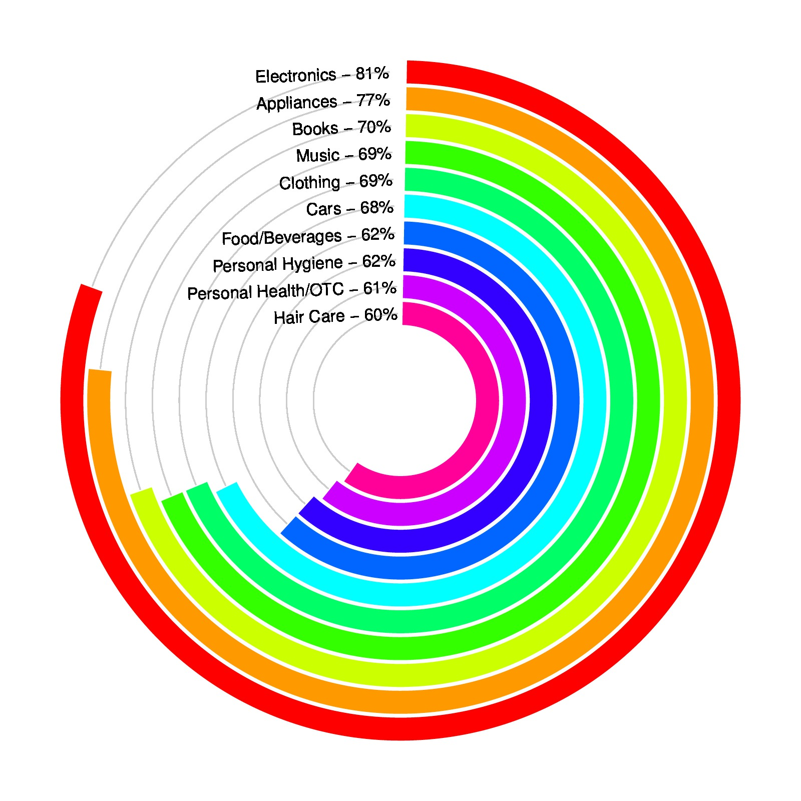

Category <- c("Electronics", "Appliances", "Books", "Music", "Clothing",
"Cars", "Food/Beverages", "Personal Hygiene",
"Personal Health/OTC", "Hair Care")
Percent <- c(81, 77, 70, 69, 69, 68, 62, 62, 61, 60)
color = rainbow(length(Percent))
Category = rev(Category)
Percent = rev(Percent)
color = rev(color)
library(circlize)
par(mar = c(1, 1, 1, 1))
circos.par("start.degree" = 90)
circos.initialize("a", xlim = c(0, 100)) # 'a` just means there is one sector
circos.trackPlotRegion(ylim = c(0.5, length(Percent)+0.5), , track.height = 0.8,
bg.border = NA, panel.fun = function(x, y) {
xlim = get.cell.meta.data("xlim") # in fact, it is c(0, 100)
for(i in seq_along(Percent)) {
circos.lines(xlim, c(i, i), col = "#CCCCCC")
circos.rect(0, i - 0.45, Percent[i], i + 0.45, col = color[i], border = "white")
}
for(i in seq_along(Percent)) {
circos.text(xlim[2], i, paste0(Category[i], " - ", Percent[i], "%"), adj = c(1, 0.5))
}
})
circos.clear()